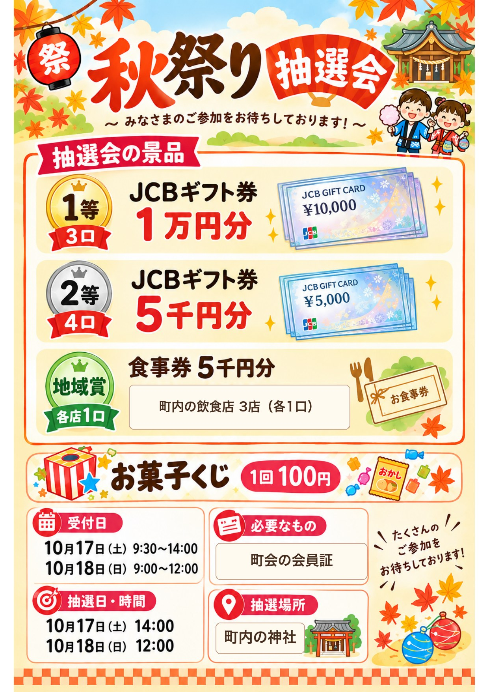

こんにちは、まっさんです。
前回の班長会議で決まった秋祭りの抽選会。チラシが出来上がりました（地域が分かる部分は伏せています）。

1等はJCBギフト券1万円分が3口、2等は5千円分が4口。地域賞として、町内の飲食店のお食事券（各5千円分）も用意しました。
お食事券は、もともと4店舗にお願いする予定でした。ただ1店舗はまだ交渉中で、チラシの配布期限に間に合わなかったため、チラシには3店舗だけを載せています。秋祭りまでにお許しをいただけたら、4店舗でお食事券を出す予定です。
どなたでも参加できるお菓子くじは1回100円です。
ところが、チラシで「抽選会には会員証が必要です」と伝えたところ、「会員証をもらっていない」という問い合わせが複数きました。
会員証を配ったのは2か月ほど前。そもそも、これまで町会に会員証というもの自体がありませんでした。受け取ったことを覚えていない方や、どこかにしまい込んでしまった方がいても無理はありません。
それに、会員証は1世帯に1枚しかお渡ししていません。受け取ったのがご家族のどなたか一人だけなら、他のご家族は会員証があること自体を知らない、ということも十分ありえます。正直、こういうことも起こるやろうとは思っていました。
とはいえ、豪華抽選は町会員限定なので、加入しているかどうかの確認は欠かせません。そこで、当日は受付表を用意して加入を確認し、抽選用のくじも別に作る形に変えることにしました。
会員証1枚で確認も抽選も済ませる、というシンプルな仕組みのつもりでしたが、まだ会員証が地域に定着していない今は、受付で一人ひとり確認する方が確実です。準備は少し増えますが、せっかく来てくれた方が「会員証がないから参加できへん」となる方が、よっぽどもったいないので。
会員証は、来年度から本格的に使っていく予定です。今回の問い合わせも、裏を返せば「会員証って何？」「うちにもあるの？」と、町会の取り組みに目を向けてもらえたということ。
本番まであと少し。受付表とくじ作り、がんばります。
ほな、また。